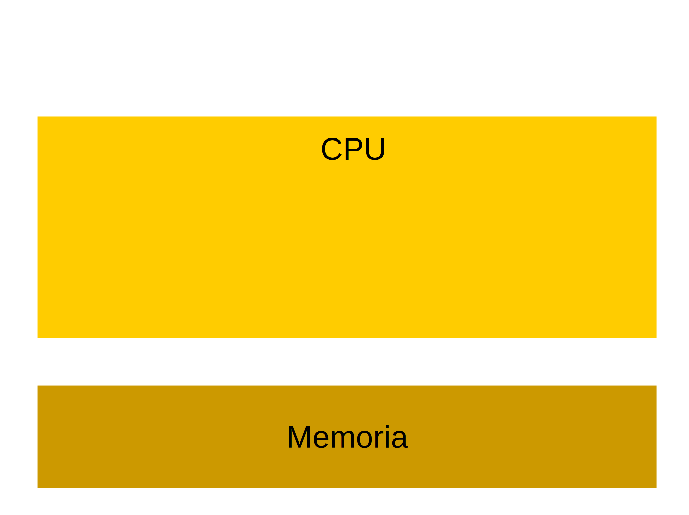
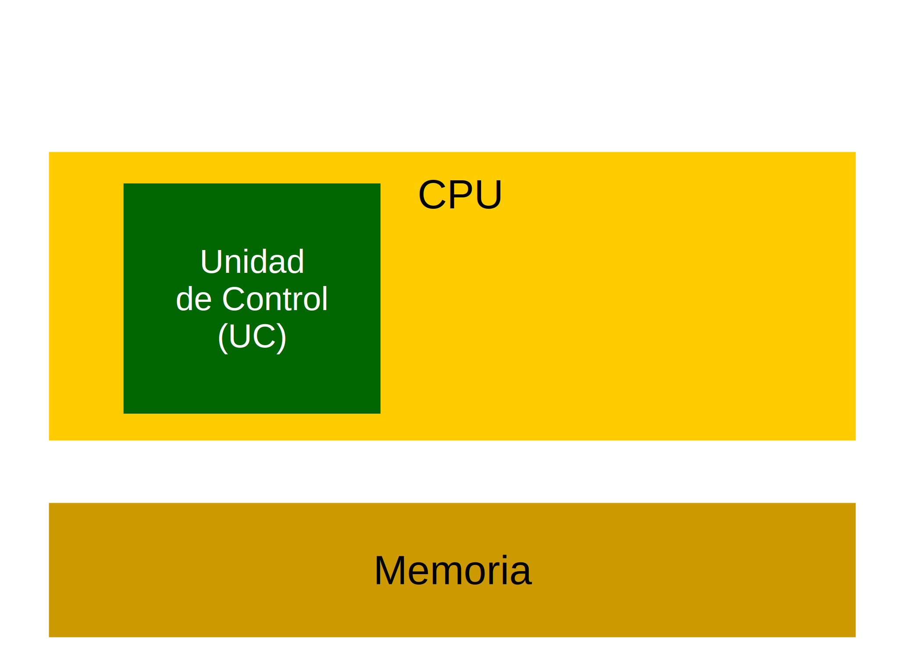
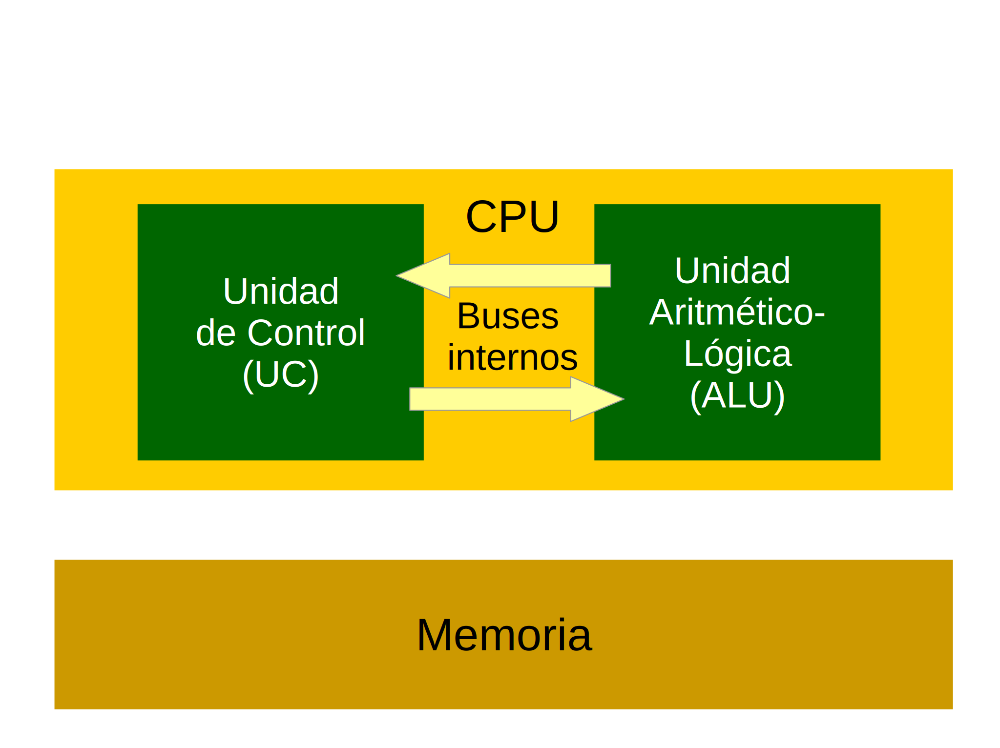
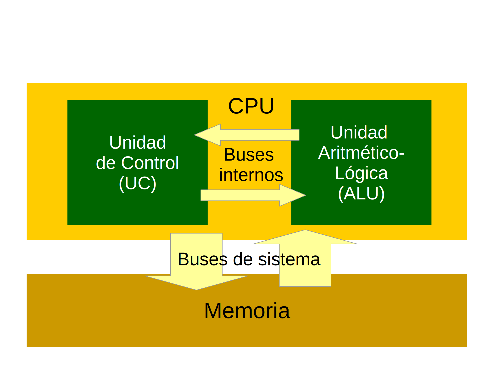
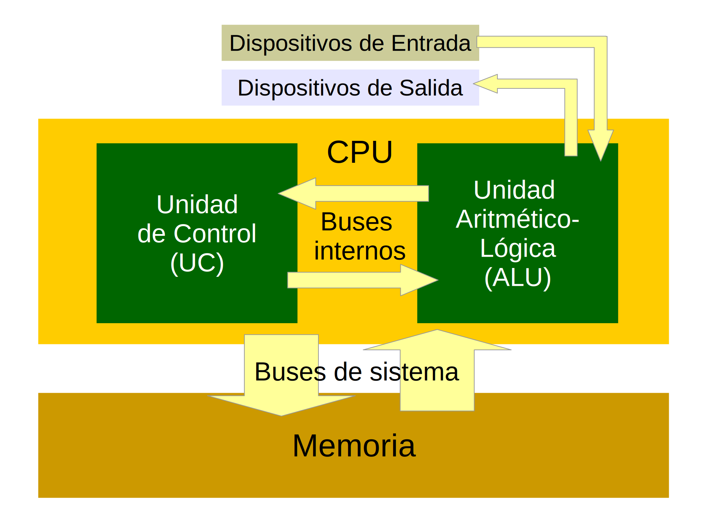
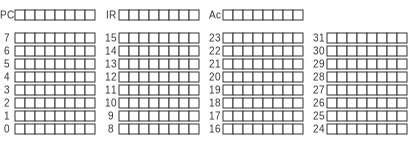

Unidad II
Organización de las Computadoras
- Componentes de la arquitectura de Von Neumann
- Modelo Computacional Binario Elemental (MCBE)
- Lenguajes de bajo nivel
Componentes de una computadora simple
- Memoria principal
- Unidad Central de Procesamiento (CPU)
- Dispositivos de Entrada y Salida (E/S)
- Interconectados mediante buses
Memoria
- Normalmente implementada con circuitos biestables
- Conjunto de posiciones de un byte, numeradas de $0$ a $n-1$
- Pueden contener datos o instrucciones
- El número de posición se denomina su dirección
Central Processing Unit, CPU
- Circuito secuencial, contiene registros
- Interpreta y ejecuta un conjunto de instrucciones
- Capaz de ejecutar un programa compuesto por instrucciones almacenadas en la memoria
- Contiene otras unidades funcionales
- Unidad de Control, realiza el ciclo de instrucción
- Unidad Lógico-Aritmética, implementa el cómputo
Máquina de Von Neumann
- Máquina de programa almacenado
- Instrucciones y datos se almacenan en una memoria común; se usan de forma diferente pero se acceden de la misma forma.
- La ejecución de un programa es secuencial (hacia direcciones ascendentes) salvo que aparezcan instrucciones de transferencia de control
Arquitectura de Von Neumann
Arquitectura de Von Neumann
Arquitectura de Von Neumann

Arquitectura de Von Neumann
Arquitectura de Von Neumann
Arquitectura de Von Neumann
Esquema del MCBE
Memoria del MCBE
- Consta de 32 posiciones de 8 bits
- Las direcciones 0 a 29 corresponden a la memoria principal
- Dirección 30
- Sólo de lectura
- Permite leer datos del dispositivo de entrada
- Dirección 31
- Sólo de escritura
- Permite escribir datos en el dispositivo de salida
Registros
- Lugares de almacenamiento para usos generales
- Funcionamiento similar al de la memoria pero mayor velocidad de acceso
- El MCBE cuenta con tres registros de 8 bits
- PC: Contador de programa, contiene la dirección de la próxima instrucción a ejecutar
- IR: Registro de instrucción, contiene la instrucción que está siendo ejecutada
- Ac: Acumulador, registro de propósito general
CPU del MCBE
- UC con registros IR y PC
- ALU con registro Ac (acumulador)
- Solamente ejecuta operaciones de suma y resta en complemento a 2 con 8 bits
- No ejecuta operaciones en Punto Flotante
Formato de instrucciones del MCBE
- Tres bits para el código de instrucción
- Cinco bits para el argumento u operando
- Operandos
- Direcciones: cinco bits sin signo → RR [0,31]
- Desplazamientos: cinco bits en C2 → RR [-16,15]
Instrucciones del MCBE
- Instrucciones de transferencia de datos
- Instrucciones aritméticas
- Instrucciones de salto o transferencia de control
- Instrucciones de control
Instrucciones de transferencia
| Código | Operando | Descripción | PC |
|---|---|---|---|
| 010 | Dirección | Mem → Ac: Copia un byte desde la dirección de memoria al acumulador | Se incrementa en 1 |
| 011 | Dirección | Ac → Mem: Copia el contenido del acumulador en esa dirección de memoria | Se incrementa en 1 |
Instrucciones aritméticas
| Código | Operando | Descripción | PC |
|---|---|---|---|
| 100 | Dirección | Suma: El contenido de la dirección se suma al Ac, y el resultado se almacena en el Ac | Se incrementa en 1 |
| 101 | Dirección | Resta: El contenido de la dirección se resta al Ac, y el resultado se almacena en el Ac | Se incrementa en 1 |
Instrucciones de salto
| Código | Operando | Descripción | PC |
|---|---|---|---|
| 110 | Desplazamiento | Salto incondicional | Se incrementa en desplazamiento |
| 111 | Desplazamiento | Salto condicional | Si $Ac == 0$, se incrementa en desplazamiento. Si $Ac <> 0$, se incrementa en 1 |
Otras instrucciones
| Código | Operando | Descripción | PC |
|---|---|---|---|
| 001 | Sin uso | Parada: Detiene la máquina. Los registros y la memoria quedan con el último valor que recibieron | No varía |
| 000 | Sin uso | No operación: No tiene ningún efecto sobre Ac ni memoria | Se incrementa en 1 |
Ciclo de instrucción
- Se carga en el IR la instrucción cuya dirección está en el PC (fetch)
- Se decodifica (decode) la instrucción, para lo cual:
- Los tres primeros bits del IR determinan de qué instrucción se trata
- Los cinco bits restantes se utilizan como argumento de la instrucción
- Se ejecuta (execute)la instrucción, con sus efectos sobre los registros o la memoria
- Se pasa a la siguiente instrucción, dada por el valor que haya quedado en el PC
Un programa MCBE
| Dirección | Contenido |
|---|---|
| 00000 | 01000110 |
| 00001 | 10000111 |
| 00010 | 01101000 |
| 00011 | 00100000 |
| 00100 | |
| 00101 | |
| 00110 | 00001100 |
| 00111 | 00000001 |
| 01000 |
Traza de ejecución
| Búsqueda | Decodificación | Ejecución | |||||
|---|---|---|---|---|---|---|---|
| PC | IR | Cod | Operando | Ac | Mem | Salida | PC |
Traza de ejecución
|
| ||||||||||||||||||||||||||||||||||||||||||||||||||||||||||||||||||||||||||||
Bestiario
- El primer paso del ciclo de instrucción es cargar el IR en el PC.
- Lo que hacen las instrucciones de salto es cambiar el efecto de las instrucciones en los registros del MCBE.
- Las instrucciones de salto sirven como desplazamiento de instrucciones y cambian el orden de los registros.
- La instrucción de salto incondicional es un desplazamiento sin signo, la de salto condicional es un desplazamiento con signo.
- Las instrucciones de salto copian el contenido de la dirección en el acumulador.